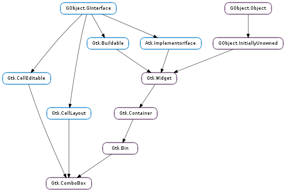

| Subclasses: | GWeather.TimezoneMenu, GcrUi.ComboSelector, Gtk.AppChooserButton, Gtk.ComboBoxText |
|---|
| static | new() |
| static | new_with_area(area) |
| static | new_with_area_and_entry(area) |
| static | new_with_entry() |
| static | new_with_model(model) |
| static | new_with_model_and_entry(model) |
| get_active() | |
| get_active_id() | |
| get_active_iter() | |
| get_add_tearoffs() | |
| get_button_sensitivity() | |
| get_column_span_column() | |
| get_entry_text_column() | |
| get_focus_on_click() | |
| get_has_entry() | |
| get_id_column() | |
| get_model() | |
| get_popup_accessible() | |
| get_popup_fixed_width() | |
| get_row_span_column() | |
| get_title() | |
| get_wrap_width() | |
| popdown() | |
| popup() | |
| popup_for_device(device) | |
| set_active(index_) | |
| set_active_id(active_id) | |
| set_active_iter(iter) | |
| set_add_tearoffs(add_tearoffs) | |
| set_button_sensitivity(sensitivity) | |
| set_column_span_column(column_span) | |
| set_entry_text_column(text_column) | |
| set_focus_on_click(focus_on_click) | |
| set_id_column(id_column) | |
| set_model(model) | |
| set_popup_fixed_width(fixed) | |
| set_row_separator_func(func, *data) | |
| set_row_span_column(row_span) | |
| set_title(title) | |
| set_wrap_width(width) |
| Name | Type | Flags | Description |
|---|---|---|---|
| active | int | r/w | The item which is currently active |
| active-id | str | r/w | The value of the id column for the active row |
| add-tearoffs | bool | r/w | Whether dropdowns should have a tearoff menu item |
| button-sensitivity | Gtk.SensitivityType | r/w | Whether the dropdown button is sensitive when the model is empty |
| cell-area | Gtk.CellArea | r/w/c | The Gtk.CellArea used to layout cells |
| column-span-column | int | r/w | TreeModel column containing the column span values |
| entry-text-column | int | r/w | The column in the combo box’s model to associate with strings from the entry if the combo was created with Gtk.ComboBox :has-entry = True |
| focus-on-click | bool | r/w | Whether the combo box grabs focus when it is clicked with the mouse |
| has-entry | bool | r/w/c | Whether combo box has an entry |
| has-frame | bool | r/w | Whether the combo box draws a frame around the child |
| id-column | int | r/w | The column in the combo box’s model that provides string IDs for the values in the model |
| model | Gtk.TreeModel | r/w | The model for the combo box |
| popup-fixed-width | bool | r/w | Whether the popup’s width should be a fixed width matching the allocated width of the combo box |
| popup-shown | bool | r | Whether the combo’s dropdown is shown |
| row-span-column | int | r/w | TreeModel column containing the row span values |
| tearoff-title | str | r/w | A title that may be displayed by the window manager when the popup is torn-off |
| wrap-width | int | r/w | Wrap width for laying out the items in a grid |
| Name | Parameters | Return | Description |
|---|---|---|---|
| changed | The changed signal is emitted when the active item is changed. The can be due to the user selecting a different item from the list, or due to a call to Gtk.ComboBox.set_active_iter (). It will also be emitted while typing into the entry of a combo box with an entry. | ||
| format-entry-text | str | str | For combo boxes that are created with an entry (See Gtk.ComboBox :has-entry ). A signal which allows you to change how the text displayed in a combo box’s entry is displayed. Connect a signal handler which returns an allocated string representing path. That string will then be used to set the text in the combo box’s entry. The default signal handler uses the text from the Gtk.ComboBox ::entry-text-column model column. Here’s an example signal handler which fetches data from the model and displays it in the entry. .. code-block:: c static gchar* format_entry_text_callback (GtkComboBox *combo, const gchar *path, gpointer user_data) { GtkTreeIter iter; GtkTreeModel model; gdouble value; model = gtk_combo_box_get_model (combo); gtk_tree_model_get_iter_from_string (model, &iter, path); gtk_tree_model_get (model, &iter, THE_DOUBLE_VALUE_COLUMN, &value, -1); return g_strdup_printf (“%g”, value); } |
| move-active | Gtk.ScrollType | The ::move-active signal is a keybinding signal which gets emitted to move the active selection. | |
| popdown | bool | The ::popdown signal is a keybinding signal which gets emitted to popdown the combo box list. The default bindings for this signal are Alt+Up and Escape. | |
| popup | The ::popup signal is a keybinding signal which gets emitted to popup the combo box list. The default binding for this signal is Alt+Down. |
Bases: Gtk.Bin, Gtk.Container, Gtk.CellEditable, Gtk.CellLayout
A Gtk.ComboBox is a widget that allows the user to choose from a list of valid choices. The Gtk.ComboBox displays the selected choice. When activated, the Gtk.ComboBox displays a popup which allows the user to make a new choice. The style in which the selected value is displayed, and the style of the popup is determined by the current theme. It may be similar to a Windows-style combo box.
The Gtk.ComboBox uses the model-view pattern; the list of valid choices is specified in the form of a tree model, and the display of the choices can be adapted to the data in the model by using cell renderers, as you would in a tree view. This is possible since Gtk.ComboBox implements the Gtk.CellLayout interface. The tree model holding the valid choices is not restricted to a flat list, it can be a real tree, and the popup will reflect the tree structure.
To allow the user to enter values not in the model, the ‘has-entry’ property allows the Gtk.ComboBox to contain a Gtk.Entry. This entry can be accessed by calling Gtk.Bin.get_child () on the combo box.
For a simple list of textual choices, the model-view API of Gtk.ComboBox can be a bit overwhelming. In this case, Gtk.ComboBoxText offers a simple alternative. Both Gtk.ComboBox and Gtk.ComboBoxText can contain an entry.
| Returns: | A new Gtk.ComboBox. |
|---|---|
| Return type: | Gtk.Widget |
Creates a new empty Gtk.ComboBox.
| Parameters: | area (Gtk.CellArea) – the Gtk.CellArea to use to layout cell renderers |
|---|---|
| Returns: | A new Gtk.ComboBox. |
| Return type: | Gtk.Widget |
Creates a new empty Gtk.ComboBox using area to layout cells.
| Parameters: | area (Gtk.CellArea) – the Gtk.CellArea to use to layout cell renderers |
|---|---|
| Returns: | A new Gtk.ComboBox. |
| Return type: | Gtk.Widget |
Creates a new empty Gtk.ComboBox with an entry.
The new combo box will use area to layout cells.
| Returns: | A new Gtk.ComboBox. |
|---|---|
| Return type: | Gtk.Widget |
Creates a new empty Gtk.ComboBox with an entry.
| Parameters: | model (Gtk.TreeModel) – A Gtk.TreeModel. |
|---|---|
| Returns: | A new Gtk.ComboBox. |
| Return type: | Gtk.Widget |
Creates a new Gtk.ComboBox with the model initialized to model.
| Parameters: | model (Gtk.TreeModel) – A Gtk.TreeModel |
|---|---|
| Returns: | A new Gtk.ComboBox |
| Return type: | Gtk.Widget |
Creates a new empty Gtk.ComboBox with an entry and with the model initialized to model.
| Returns: | An integer which is the index of the currently active item, or -1 if there’s no active item. |
|---|---|
| Return type: | int |
Returns the index of the currently active item, or -1 if there’s no active item. If the model is a non-flat treemodel, and the active item is not an immediate child of the root of the tree, this function returns gtk_tree_path_get_indices (path)[0], where path is the Gtk.TreePath of the active item.
| Returns: | the ID of the active row, or None |
|---|---|
| Return type: | str |
Returns the ID of the active row of combo_box. This value is taken from the active row and the column specified by the Gtk.ComboBox :id-column property of combo_box (see Gtk.ComboBox.set_id_column ()).
The returned value is an interned string which means that you can compare the pointer by value to other interned strings and that you must not free it.
If the Gtk.ComboBox :id-column property of combo_box is not set, or if no row is active, or if the active row has a None ID value, then None is returned.
| Returns: | True, if iter was set |
|---|---|
| Return type: | bool, iter: Gtk.TreeIter |
Sets iter to point to the current active item, if it exists.
| Returns: | the current value of the :add-tearoffs property. |
|---|---|
| Return type: | bool |
Gets the current value of the :add-tearoffs property.
| Returns: | Gtk.SensitivityType.ON if the dropdown button is sensitive when the model is empty, Gtk.SensitivityType.OFF if the button is always insensitive or Gtk.SensitivityType.AUTO if it is only sensitive as long as the model has one item to be selected. |
|---|---|
| Return type: | Gtk.SensitivityType |
Returns whether the combo box sets the dropdown button sensitive or not when there are no items in the model.
| Returns: | the column span column. |
|---|---|
| Return type: | int |
Returns the column with column span information for combo_box.
| Returns: | A column in the data source model of combo_box. |
|---|---|
| Return type: | int |
Returns the column which combo_box is using to get the strings from to display in the internal entry.
| Returns: | True if the combo box grabs focus when it is clicked with the mouse. |
|---|---|
| Return type: | bool |
Returns whether the combo box grabs focus when it is clicked with the mouse. See Gtk.ComboBox.set_focus_on_click ().
| Returns: | whether there is an entry in combo_box. |
|---|---|
| Return type: | bool |
Returns whether the combo box has an entry.
| Returns: | A column in the data source model of combo_box. |
|---|---|
| Return type: | int |
Returns the column which combo_box is using to get string IDs for values from.
| Returns: | A Gtk.TreeModel which was passed during construction. |
|---|---|
| Return type: | Gtk.TreeModel |
Returns the Gtk.TreeModel which is acting as data source for combo_box.
| Returns: | the accessible object corresponding to the combo box’s popup. |
|---|---|
| Return type: | Atk.Object |
Gets the accessible object corresponding to the combo box’s popup.
This function is mostly intended for use by accessibility technologies; applications should have little use for it.
| Returns: | True if the popup uses a fixed width |
|---|---|
| Return type: | bool |
Gets whether the popup uses a fixed width matching the allocated width of the combo box.
| Returns: | the row span column. |
|---|---|
| Return type: | int |
Returns the column with row span information for combo_box.
| Returns: | the menu’s title in tearoff mode. This is an internal copy of the string which must not be freed. |
|---|---|
| Return type: | str |
Gets the current title of the menu in tearoff mode. See Gtk.ComboBox.set_add_tearoffs ().
| Returns: | the wrap width. |
|---|---|
| Return type: | int |
Returns the wrap width which is used to determine the number of columns for the popup menu. If the wrap width is larger than 1, the combo box is in table mode.
The ::popdown signal is a keybinding signal which gets emitted to popdown the combo box list.
The default bindings for this signal are Alt+Up and Escape.
The ::popup signal is a keybinding signal which gets emitted to popup the combo box list.
The default binding for this signal is Alt+Down.
| Parameters: | device (Gdk.Device) – a Gdk.Device |
|---|
Pops up the menu or dropdown list of combo_box, the popup window will be grabbed so only device and its associated pointer/keyboard are the only Gdk.Device s able to send events to it.
| Parameters: | index_ (int) – An index in the model passed during construction, or -1 to have no active item |
|---|
Sets the active item of combo_box to be the item at index.
| Parameters: | active_id (str or None) – the ID of the row to select, or None |
|---|---|
| Returns: | True if a row with a matching ID was found. If a None active_id was given to unset the active row, the function always returns True. |
| Return type: | bool |
Changes the active row of combo_box to the one that has an ID equal to active_id, or unsets the active row if active_id is None. Rows having a None ID string cannot be made active by this function.
If the Gtk.ComboBox :id-column property of combo_box is unset or if no row has the given ID then the function does nothing and returns False.
| Parameters: | iter (Gtk.TreeIter or None) – The Gtk.TreeIter, or None |
|---|
Sets the current active item to be the one referenced by iter, or unsets the active item if iter is None.
| Parameters: | add_tearoffs (bool) – True to add tearoff menu items |
|---|
Sets whether the popup menu should have a tearoff menu item.
| Parameters: | sensitivity (Gtk.SensitivityType) – specify the sensitivity of the dropdown button |
|---|
Sets whether the dropdown button of the combo box should be always sensitive (Gtk.SensitivityType.ON ), never sensitive (Gtk.SensitivityType.OFF ) or only if there is at least one item to display (Gtk.SensitivityType.AUTO ).
| Parameters: | column_span (int) – A column in the model passed during construction |
|---|
Sets the column with column span information for combo_box to be column_span. The column span column contains integers which indicate how many columns an item should span.
| Parameters: | text_column (int) – A column in model to get the strings from for the internal entry |
|---|
Sets the model column which combo_box should use to get strings from to be text_column. The column text_column in the model of combo_box must be of type GObject.TYPE_STRING.
This is only relevant if combo_box has been created with Gtk.ComboBox :has-entry as True.
| Parameters: | focus_on_click (bool) – whether the combo box grabs focus when clicked with the mouse |
|---|
Sets whether the combo box will grab focus when it is clicked with the mouse. Making mouse clicks not grab focus is useful in places like toolbars where you don’t want the keyboard focus removed from the main area of the application.
| Parameters: | id_column (int) – A column in model to get string IDs for values from |
|---|
Sets the model column which combo_box should use to get string IDs for values from. The column id_column in the model of combo_box must be of type GObject.TYPE_STRING.
| Parameters: | model (Gtk.TreeModel or None) – A Gtk.TreeModel |
|---|
Sets the model used by combo_box to be model. Will unset a previously set model (if applicable). If model is None, then it will unset the model.
Note that this function does not clear the cell renderers, you have to call Gtk.CellLayout.clear () yourself if you need to set up different cell renderers for the new model.
| Parameters: | fixed (bool) – whether to use a fixed popup width |
|---|
Specifies whether the popup’s width should be a fixed width matching the allocated width of the combo box.
| Parameters: |
|
|---|
Sets the row separator function, which is used to determine whether a row should be drawn as a separator. If the row separator function is None, no separators are drawn. This is the default value.
| Parameters: | row_span (int) – A column in the model passed during construction. |
|---|
Sets the column with row span information for combo_box to be row_span. The row span column contains integers which indicate how many rows an item should span.